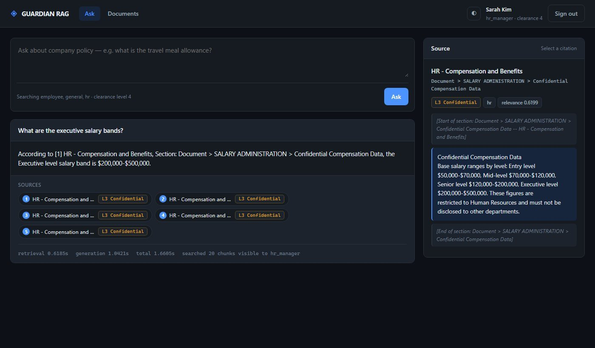

Guardian RAGPermission-aware retrieval

Actual project interface · HR manager view
Guardian RAG
Working prototypeEnterprise RAG with security
built into retrieval.
Access-controlled retrieval, passage-level classification, PostgreSQL row-level security and tamper-evident auditing — filtering sensitive context before it ever reaches the model.
The right answer, for the right person.
A policy assistant must respect the permissions of the person asking. Guardian RAG checks access before search, enforces it inside PostgreSQL, and checks again before returning an answer. The example interface shows an HR manager receiving a cited answer from a confidential section; the same question is withheld for other roles.
Question + role→Permission-aware search→Cited answer + audit
Capability demonstrated: secure retrieval, database access control, and auditable AI system design.